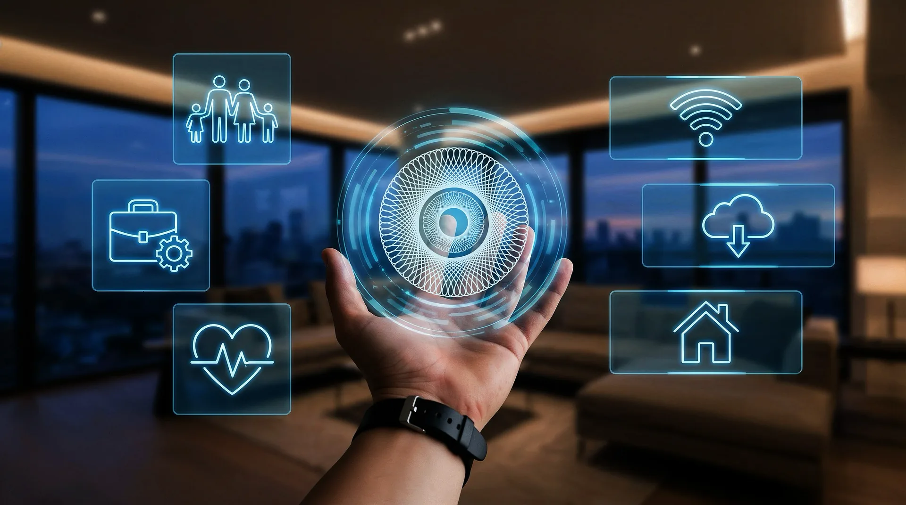
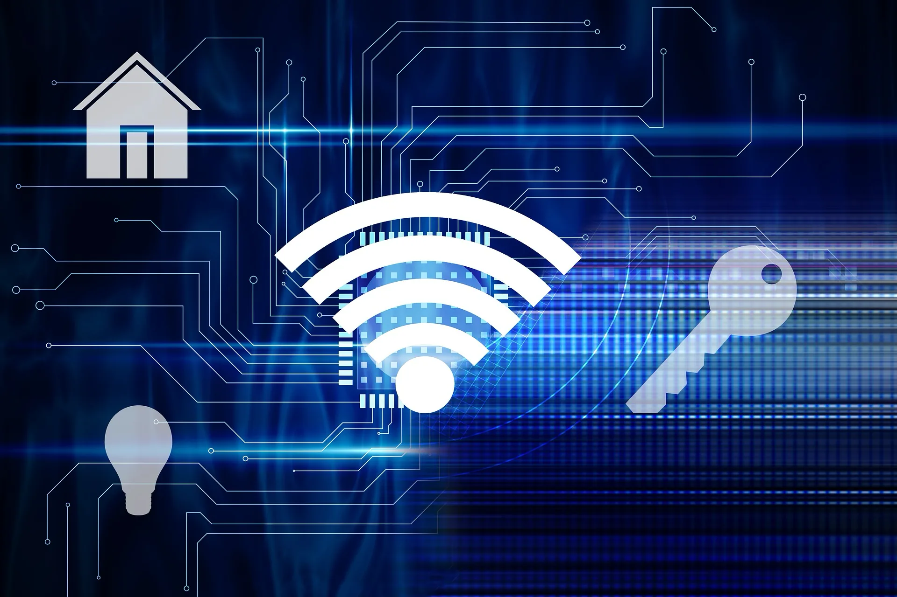
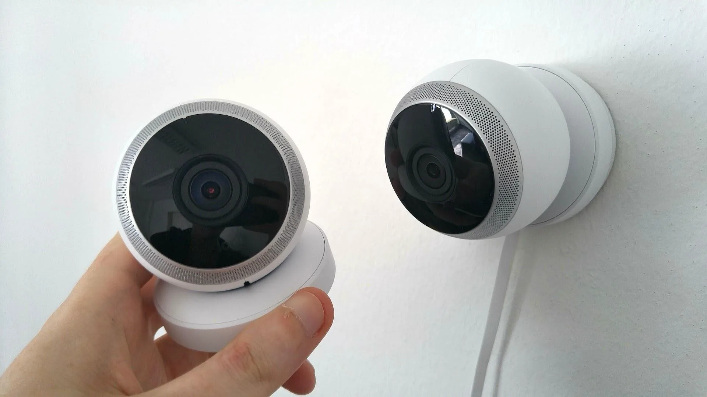
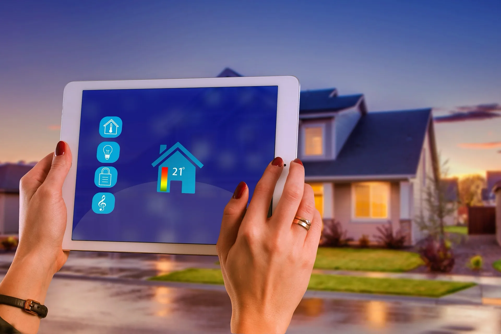
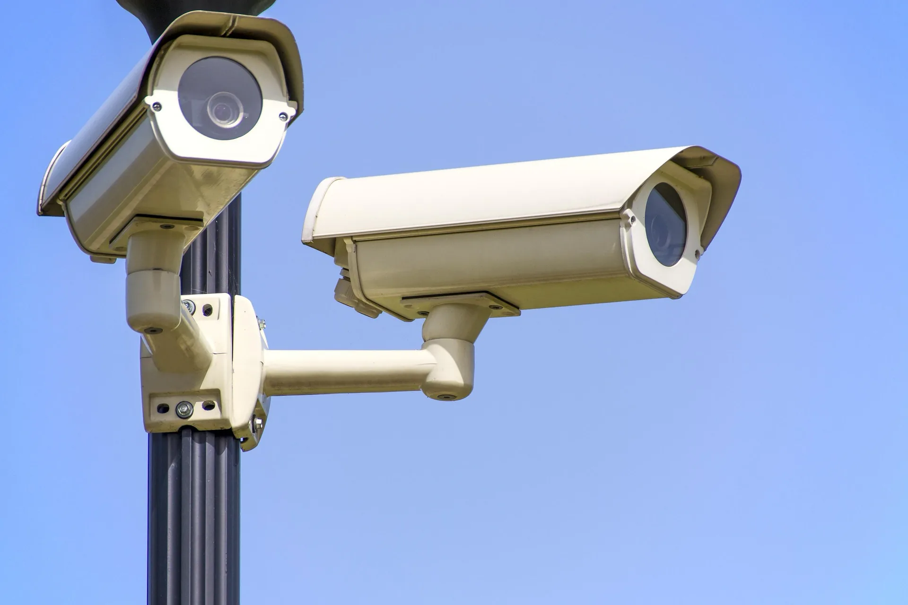
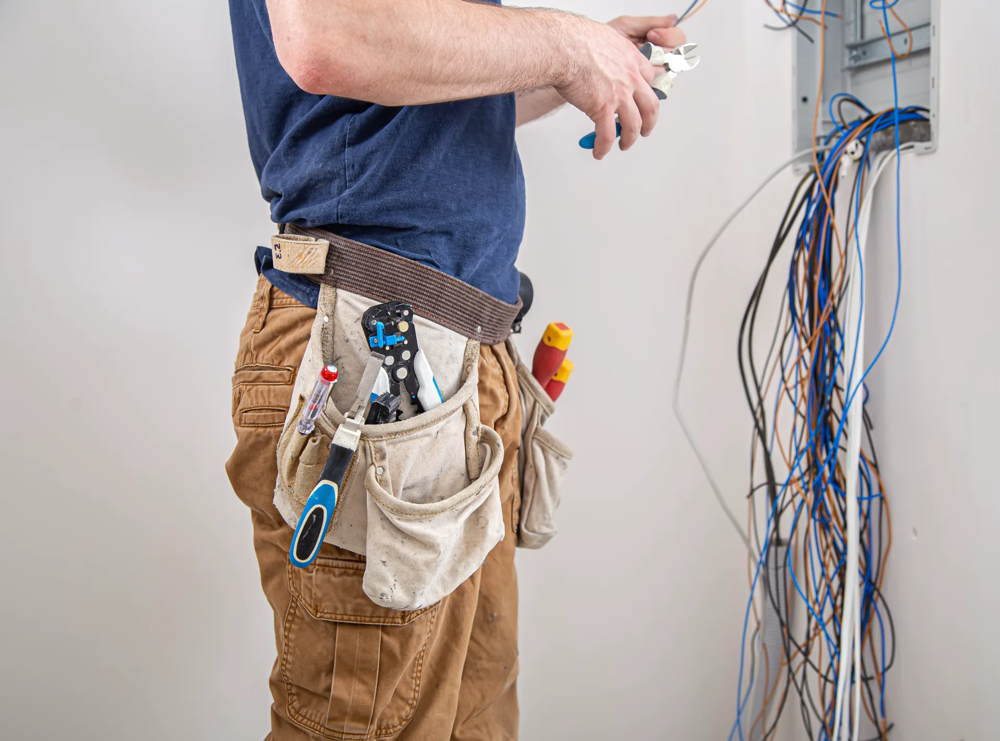
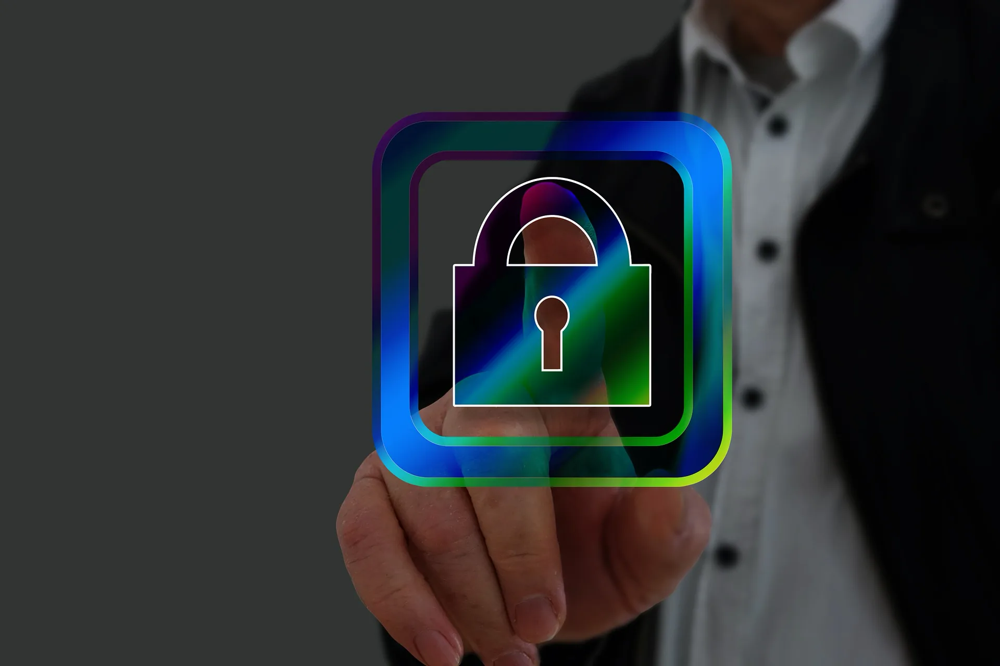
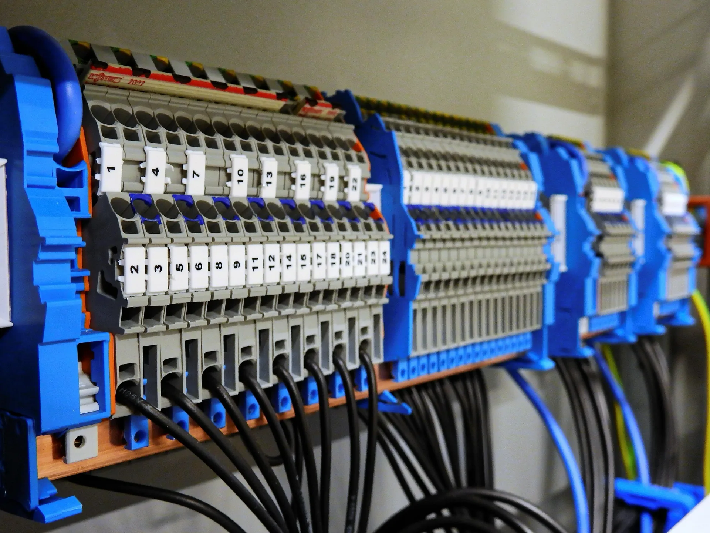
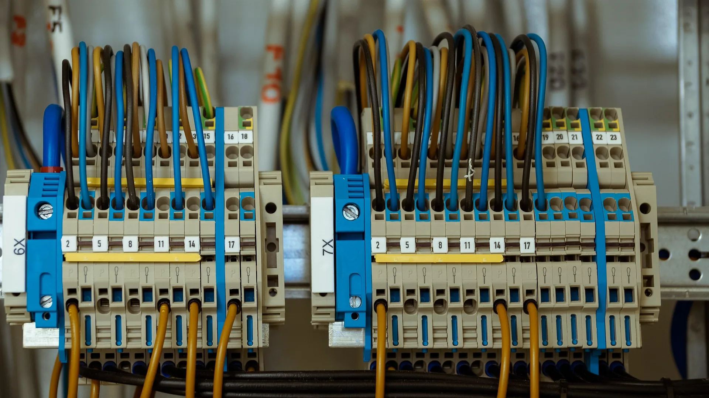

Illuminazione intelligente
Scenari luce da interruttori smart, app o comandi vocali: dimmer, zone e risparmio energetico, con posa e collaudo curati come sul resto dell’impianto.

Elettricista — Potenza e provincia
Elettricista esperto con oltre quarant’anni di attività: realizziamo e manuteniamo impianti civili e industriali, con integrazione domotica e tecnologie connesse dopo valutazione tecnica. Operiamo a Potenza e provincia per privati, attività ed enti.
Smart home
La nostra esperienza in domotica nasce dall’impianto elettrico: prima quadro, cablaggio e verifiche, poi funzioni smart. Proponiamo integrazioni su misura per illuminazione, automazioni, predisposizioni di sicurezza, impianti TV e reti LAN, con indicazioni chiare su limiti tecnici e normative applicabili al singolo intervento.
10 capitoli pratici su valutazione impianto, automazioni, rete, dispositivi e manutenzione: contenuti divulgativi per capire cosa chiedere prima di un progetto.






Scenari luce da interruttori smart, app o comandi vocali: dimmer, zone e risparmio energetico, con posa e collaudo curati come sul resto dell’impianto.
Comandi e scenari per cancelli, porte, finestre e serrande motorizzate: integrazione in domotica, sicurezza e consumi, con posa cavi e protezioni a norma.
Impianti di videosorveglianza / antifurto, videocitofoni, serrature elettriche e sensori: cablaggio, alimentazioni e integrazione con quadri e rete per sistemi affidabili e manutenibili.
Termostati connessi, programmazioni e gestione remota di riscaldamento e raffrescamento, coordinati con quadri e carichi dell’impianto elettrico.
Impianti TV e reti LAN (cablaggio strutturato, switch, Wi‑Fi), rete stabile per IoT e consulenza su piattaforme (app, assistenti vocali), con la stessa precisione del cablaggio elettrico.
Predisposizioni a muro, canaline e quadri pensati per espandere la domotica in futuro: meno demolizioni e costi grazie a una progettazione anticipata.
Assistenza su impianti domotici già installati: configurazione, aggiornamenti e interventi mirati, con preventivo chiaro e competenza elettrica di fondo.
Cosa facciamo
Seguiamo una ampia gamma di lavori elettrici: progettazione, installazione, manutenzione e adeguamento di impianti civili e industriali, con integrazione domotica, automazione, predisposizioni per sicurezza, impianti TV e reti LAN. Dalla casa al condominio, dall’ufficio agli enti — con sopralluogo quando necessario e interventi in provincia di Potenza e dintorni.
Impianti a norma per case, ville e appartamenti: quadri, prese, punti luce, impianti TV / reti LAN, domotica (illuminazione smart, predisposizioni, integrazione dispositivi), automazione (cancelli, porte, finestre, serrande) e sicurezza con impianti di videosorveglianza e antifurto. Ristrutturazioni complete con focus su sicurezza e comfort.
Impianti per uffici, negozi, magazzini e industrie: distribuzione, illuminazione, macchinari, impianti TV / reti LAN, automazioni (cancelli, porte, finestre, serrande), sicurezza (videosorveglianza / antifurto) e domotica dove serve. Adeguamenti normativi e supporto tecnico dedicato.
Interventi per enti e strutture pubbliche su affidamento: impianti a norma, manutenzione programmata e documentazione tecnica coerente con il lavoro eseguito, inclusi interventi di automazione o domotica quando previsti.
Impianti elettrici e complementi — Nuovi impianti, ampliamenti, adeguamenti al D.M. 37/08, documentazione tecnica e dichiarazioni nei casi previsti, impianti di terra, antifulmine, cablaggio strutturato, impianti TV, reti LAN, automazione (cancelli, porte, finestre, serrande), predisposizioni per videosorveglianza / antifurto e domotica integrata.
La nostra storia
L'Elettricista di Rocco Tammone opera da oltre 40 anni nel settore degli impianti elettrici, con sede a Pietragalla (PZ).
In quattro decenni abbiamo realizzato migliaia di impianti: abitazioni, condomini, uffici, attività commerciali e lavori per la pubblica amministrazione. La nostra priorità è la sicurezza, il rispetto delle norme e la qualità del cablaggio e dei materiali.
Negli ultimi anni abbiamo integrato questa esperienza con la domotica e gli impianti smart: stessa cura su quadri e predisposizioni, così la tecnologia resta stabile, espandibile e al servizio di chi abita o lavora negli spazi che realizziamo.
Oggi offriamo progettazione, installazione e manutenzione di impianti elettrici civili e industriali — tradizionali e connessi — con l’attenzione al dettaglio e alla relazione con il cliente che ci ha caratterizzato fin dall’inizio.

Referenze
Collaborazioni con enti, aziende e privati sul territorio lucano e non solo — da impianti classici a progetti con domotica e automazione.
“Lavoro eseguito con professionalità e puntualità. Impianto a norma e nessun problema dopo anni.”
“Collaborazione seria per interventi su edifici comunali. Documentazione in ordine e tempi rispettati.”
“Impianto elettrico e predisposizioni per la domotica: ci hanno guidato sulle scelte tecniche con chiarezza e soluzione su misura.”
Articoli
Guide pratiche su sicurezza elettrica, domotica, consumi e manutenzione: contenuti pensati per aiutarti a scegliere con consapevolezza.

Una panoramica chiara su sensori, videocamere, notifiche e predisposizioni elettriche per un sistema sicuro e davvero utile.
ApprofondisciWi-Fi e cablaggio non si escludono: come progettare una rete stabile per videosorveglianza, TV, assistenti vocali e automazioni.
Approfondisci
Interruttori che scattano, linee sovraccariche e dispositivi obsoleti: i controlli essenziali per mantenere l’impianto affidabile e a norma.
ApprofondisciDalla luce di cortesia serale alle automazioni per risparmio energetico: esempi pratici di scenari davvero comodi nella vita quotidiana.
ApprofondisciCome evitare punti ciechi, falsi allarmi e connessioni instabili: una guida essenziale per un impianto di videosorveglianza affidabile.
Approfondisci
Verifiche semplici ma fondamentali su differenziali, prese, linee e carichi per prevenire guasti e mantenere sicurezza e continuità.
ApprofondisciIntegrare domotica e sistema antifurto non è solo una questione di app: quadri, alimentazioni, rete e criteri di installazione decidono se il sistema sarà affidabile per anni o fonte di falsi allarmi e guasti.
Sensori, sirene, centraline e videocamere hanno tutti bisogno di alimentazioni stabili, protezioni adeguate nel quadro e, spesso, di una rete dati che non si interrompe quando il Wi‑Fi è congestionato. Un impianto pensato “a pezzi”, aggiungendo dispositivi senza verificare sezionamenti, sezioni di cavo e carichi sul differenziale, è la causa più frequente di interventi ripetuti e prestazioni deluse.
La fase giusta per definire integrazioni è in progetto: canaline dedicate, punti di rete nei punti strategici, predisposizioni per tastiere e sensori cablati dove la wireless non è la scelta migliore (lunghi percorsi, pareti spesse, ambienti critici).
L’antifurto ha la funzione di rilevare intrusioni e segnalare allarmi secondo norme e buone pratiche; la domotica gestisce scenari di comfort e automazione. Avvicinare le due cose è utile (stesse notifiche sul telefono, spegnimento luci in caso di inserimento totale, simulazione presenza), ma va evitato di “mischiare” sullo stesso dispositivo compiti incompatibili o di bypassare protezioni elettriche per comodità di installazione.
Sovraccaricare linee già al limite, usare prolunghe e derivazioni “provvisorie” che restano anni, o ignorare l’impianto di terra e le equipotenzialità dove la norma le richiede sono scelte che rendono fragile tutta la catena — compresa la sicurezza degli stessi sistemi antifurto. Un intervento professionale parte sempre da misure, verifica dei quadri e pianificazione delle nuove utenze.
Nelle nuove costruzioni o ristrutturazioni con murature aperte, definire insieme percorsi di cavi (rete, alimentazioni ausiliarie, sensori) riduce passaggi in vista e migliora le prestazioni. Posticipare la progettazione “a impianto finito” costringe spesso a soluzioni esteticamente peggiori o più fragili.
La documentazione del quadro — linee nominate, protezioni e carichi — è il riferimento per ogni ampliamento futuro (nuove telecamere, integrazione domotica, seconda centrale o ripetitori).
Vuoi integrare domotica e sicurezza nel tuo impianto? Descrivi l’abitazione o l’attività e ti indicheremo la soluzione più sensata.
Richiedi un preventivoIl Wi‑Fi è comodo, ma non sostituisce un cablaggio strutturato dove servono banda stabile, bassa latenza e continuità — tipico di telecamere, smart TV, postazioni fisse e server locali.
Una rete domestica moderna conviene progettarla a livelli: dorsali in cavo (Cat 6 o superiore, secondo distanze e standard richiesti), punti d’accesso posizionati dove il segnale deve coprire davvero, e switch gestiti o meno in base alla complessità. Gli assistenti vocali, i sensori a batteria e gli smartphone restano su wireless; i dispositivi “fissi” e voraci di banda beneficiano del cavo.
In ristrutturazione o nuova costruzione il costo marginale di aggiungere un cavo in più in canalina è basso rispetto a rifare i muri dopo. Anche in immobili esistenti esistono percorsi in falsi soffitti, canaline esterne o minitubazioni: la scelta va fatta con criterio estetico e tecnico. Un elettricista abituato a reti e domotica può indicare priorità (dove servono certezze assolute) e dove il wireless basta.
Una rete domestica ben fatta separa spesso il traffico “pesante” (video, NAS, postazioni) dal resto tramite switch e, se serve, VLAN o segmenti logici. Non è snobismo tecnico: riduce micro-interruzioni quando qualcuno fa backup o guarda film in 4K mentre altri lavorano in videoconferenza.
I punti d’accesso Wi‑Fi vanno posizionati dove servono davvero copertura, non solo accanto al router in ingresso. Spesso conviene più accessi ben piazzati che un unico dispositivo al massimo volume.
L’arrivo della fibra o del punto di demarcazione definisce dove nasce la LAN interna: prevedere spazio ventilato per modem/router, eventuale rack o armadietto, e prese dedicate evita trasformatori appesi e cavi sotto tiro. In attività o studi, la messa a terra e le protezioni dei quadri vanno coerenti con la quantità di apparati collegati.
Stai ristrutturando o vuoi stabilizzare rete e domotica? Possiamo definire dorsali, punti rete e alimentazioni insieme.
Richiedi un preventivoUn impianto non “scade” come una patente, ma componenti obsoleti, nuovi carichi e norme aggiornate possono rendere necessario un adeguamento — prima che guasti e rischi diventino evidenti.
Interruttori differenziali che scattano spesso senza causa apparente, odore di surriscaldamento presso prese o quadri, spine che si scalda, luci che lampeggiano quando si accendono altri carichi sono campanelli d’allarme. Anche l’assenza di terra efficace, o prese senza protezioni adeguate in bagni e ambienti umidi, richiede interventi mirati e documentati.
Passare da caldaia a pompa di calore, installare wallbox per auto elettriche, cucine con più forni e piani cottura induzione, o aggiungere condizionatori e domotica aumenta i carichi e la complessità delle protezioni. Non è raro che servano nuove linee, revisione delle curve di intervento e verifica della sezione dei cavi.
Per nuovi impianti o modifiche rilevanti valgono le regole sulla messa in esercizio (D.M. 37/08). Un professionista può indicarti cosa è obbligatorio nel tuo caso e cosa è buona pratica per sicurezza e rivendita dell’immobile. Rimandare interventi strutturali quando i segnali ci sono già espone a costi maggiori dopo un guasto.
Non sempre serve rifare tutto: a volte basta una nuova linea dedicata, la sostituzione di un differenziale obsoleto o il ripristino di protezioni coordinate con i carichi attuali. In altri casi, specialmente con quadri saturi o cavi sotto dimensionati, la proposta sarà più strutturata.
La valutazione tiene conto di età dei cavi, tipo di impianto originario, modifiche abusive passate e obiettivi futuri (clima, auto elettrica, domotica). Un sopralluogo con apertura del quadro e storia dell’edificio è il modo più onesto per decidere.
Sospetti che il tuo quadro o le linee non siano più adeguati? Un sopralluogo permette priorità chiare e un preventivo fondato.
Richiedi un preventivoL’illuminazione smart non è solo accendere una lampadina con il telefono: sono scenari che risparmiano energia, aumentano il comfort e migliorano la sicurezza percepita — se coerenti con interruttori, cablaggio e abitudini reali.
Luci di cortesia che si accendono al calare del sole o su movimento nei corridoi, spegnimento globale “esco di casa” dalla stessa parete dove già inserisci l’allarme, dimmerazione in soggiorno per cinema e cena: sono esempi che funzionano quando comandi fisici e app convivono senza costringere tutti in casa a usare solo lo smartphone.
Sensori di luminosità e presenza, spegnimenti automatici in locali poco usati e programmazioni stagionali riducono sprechi. L’impianto elettrico deve supportare carichi LED, eventuali alimentatori e, dove serve, neutri separati per dimmer intelligenti: dettagli che si progettano in fase elettrica, non solo “a lampadina cambiata”.
Orari lavorativi, zone a passaggio e illuminazione di sicurezza su percorsi e uscite possono integrarsi con impianti centralizzati o modulari. La chiarezza su chi comanda cosa (gruppi, scenari, priorità) evita comportamenti strani dopo mesi d’uso.
Il mix più apprezzato in famiglia è spesso: pulsanti fisici dove si sono sempre usati, scenari e app per automazioni e assenza. Sostituire ogni punto luce con un modulo connesso senza progetto può creare confusione su neutri e compatibilità LED: meglio definire una gerarchia (cosa è sempre manuale, cosa è automatizzato).
Le sorgenti calde/fredde, i circuiti dimmerabili e i trasformatori per strisce LED hanno requisiti diversi: vanno previsti in fase elettrica, non solo a lampada installata.
Vuoi illuminazione smart integrata nel quadro e nelle abitudini della tua casa o attività?
Richiedi un preventivoUn impianto di telecamere IP efficace nasce da inquadrature pensate, alimentazioni affidabili e rete che regge il traffico continuo — non solo dal numero di dispositivi acquistati.
Conviene elencare ingressi, recinzioni, garage, cortili e corridoi critici prima di fissare staffe. L’altezza e l’angolazione influenzano tanto la qualità notturna quanto il rischio di manomissione. Coprire gli stessi punti con due inquadrature diverse riduce zone non osservate e aiuta in caso di schermo parziale (vegetazione, riflessi).
Le telecamere che trasmettono H24 stressano router e Wi‑Fi se sono tutte wireless. Dove possibile, Ethernet o PoE (Power over Ethernet) portano alimentazione e dati sullo stesso cavo con continuità superiore. Switch e priorità VLAN o segmentazione di rete aiutano a isolare il traffico video dal resto della casa.
Regolamenti e buonsenso impongono di evitare inquadrature su proprietà altrui o spazi non pertinenti; in condomini servono accordi e spesso delibere. Insegne informative e conservazione delle immagini vanno pianificate insieme alla posa tecnica.
Telecamere con buon sensore in condizioni di scarsa illuminazione riducono rumore e falsi movimenti che stressano notifiche e hard disk. La scelta tra registrazione continua, su evento o ibrida dipende da quanto serve la continuità probatoria e dalla capacità di storage.
Registrare su NVR locale, su cloud o in modo ibrido ha implicazioni su costi, privacy e cosa succede se cade Internet: va deciso in progetto, non dopo l’installazione.
Vuoi un impianto di videosorveglianza IP cablato e configurato correttamente?
Richiedi un preventivoAlcune verifiche, affiancate a interventi programmati dal professionista quando necessario, aiutano a prevenire guasti e a mantenere protezioni e linee nei limiti previsti.
Verificare che gli interruttori non siano caldi anomali, che le etichette delle linee siano leggibili e che i test manuali dei differenziali (dove previsti) avvengano con la periodicità indicata dal costruttore. Scatti frequenti vanno indagati, non ignorati.
Connessioni lasse o spine che si scalda sono rischio di archi e incendi. Evitare adattatori permanenti e sovraccarichi su singole prese multiple.
Ogni nuovo elettrodomestico potente (forno, induzione, clima) va valutato rispetto alla linea che lo alimenta. Aggiunte ripetute senza controllo del quadro possono portare a protezioni che intervengono sempre o mai.
Soprattutto dove ci sono bagni, ambienti medici o officine, il percorso di terra deve essere integro. Interventi edili su murature possono danneggiare collegamenti nascosti: se ci sono dubi, la verifica è compito specialistico.
Polvere, umidità e cavi non fissati correttamente peggiorano affidabilità e sicurezza. Tenere il quadro accessibile (non stipato di oggetti), documentato e chiuso a chiave dove ha senso.
Queste verifiche non sostituiscono le revisioni periodiche obbligate per specifiche attività o impianti, ma orientano su cosa osservare nel tempo. Per un check strutturale e strumentale è opportuno rivolgersi a un elettrico qualificato.
Scintille, odore di bruciato, prese che si muovono nel muro o differenziale che non resta inserito sono situazioni da non normalizzare: vanno trattate come prioritarie. Spegnere carichi sospetti e contattare un professionista riduce il rischio di danni a persone e cose.
Per utenze non domestiche o impianti comuni spesso esistono obblighi e registri: la periodicità e le prove strumentali sono diverse rispetto alla sola casa singola. Anche l’illuminazione di emergenza e i quadri di ripartizione richiedono controlli dedicati.
Vuoi una verifica dell’impianto o interventi di manutenzione programmata?
Richiedi un preventivoDomande frequenti
Risposte rapide su preventivi, interventi, domotica e normativa. Per casi specifici richiedi un preventivo o chiamaci.
Compila il modulo con una descrizione dell’intervento: ti risponderemo con indicazioni su tempi, modalità e, quando possibile, una stima orientativa. Per lavori complessi può servire un sopralluogo.
Siamo a Pietragalla (PZ) e interveniamo in provincia di Potenza e comuni limitrofi. Contattaci per verificare la disponibilità sul tuo territorio.
La domotica si appoggia all’impianto elettrico: realizziamo impianti civili e industriali, manutenzioni, adeguamenti e integrazione di sistemi smart dove serve.
Dipende dal tipo di lavoro. Per molte richieste il primo contatto avviene da remoto; per nuovi impianti, ristrutturazioni o domotica spesso un sopralluogo permette una proposta precisa e conforme alle norme.
Impianto progettato e realizzato secondo le norme vigenti (es. D.M. 37/08 per messa in esercizio), con materiali idonei, protezioni adeguate e documentazione quando richiesta.
Spesso sì, con valutazione di quadri, cavi e carichi. In alcuni casi servono integrazioni o adeguamenti: ti indichiamo la soluzione più sensata dopo aver visto l’impianto.
Sì: la richiesta tramite modulo o il primo contatto per un preventivo è senza impegno. Eventuali costi per sopralluoghi particolari o perizie complesse, se previsti, vengono concordati prima.
Cerchiamo di rispondere entro 24–48 ore nei giorni lavorativi, in base al carico di lavoro e alla completezza delle informazioni che ci fornisci.
Per gli interventi che lo richiedono (nuovi impianti, modifiche rilevanti, messa in esercizio) seguiamo le procedure previste dalla normativa, con documentazione e collaudo coerenti con il tipo di lavoro eseguito.
Sì: impianti comuni, quadri, illuminazione parti condominiali, predisposizioni e interventi con documentazione per assemblee e regolamenti quando necessario.
Oltre alla posa tecnica, vanno rispettate le norme sulla privacy (insegne, inquadrature, conservazione immagini) e le indicazioni per l’installazione in spazi privati o condominiali. Ti guidiamo sulle scelte compatibili con legge e buonsenso.
Il cablaggio strutturato (dove fattibile) dà stabilità a TV, telecamere, PC e dispositivi fissi; il Wi‑Fi resta utile per mobilità. Progettiamo la combinazione più adatta a uso, muri e budget.
Sì: verifiche, sostituzioni componenti, aggiornamenti protezioni, messa in sicurezza e interventi mirati, con preventivo quando possibile prima dell’esecuzione.
Sì: l’attività è gestita con partita IVA e documentazione fiscale secondo normativa. Le modalità di pagamento le concordiamo in fase di accettazione del preventivo o del contratto di lavoro.
Il prima possibile, idealmente in fase di progetto: così si definiscono quadri, canaline e predisposizioni (anche per domotica e rete) prima di chiudere murature e finiture, evitando demolizioni costose dopo.
Contattaci
Descrivi il tuo progetto — impianto elettrico, ristrutturazione, domotica o assistenza su sistemi già installati — e ti risponderemo con un preventivo gratuito e senza impegno.
Dove siamo
Per preventivi su impianti elettrici, ristrutturazioni o domotica, usa il modulo Richiedi un preventivo, oppure chiamaci o scrivici su WhatsApp.
Indirizzo
Via Madrid 12 — 85020 Pietragalla (PZ)
Telefono
+39 347 629 7492
Partita IVA / VAT
IT 01919900769
Attività
Elettricista — Impiantistica elettrica e integrazione domotica